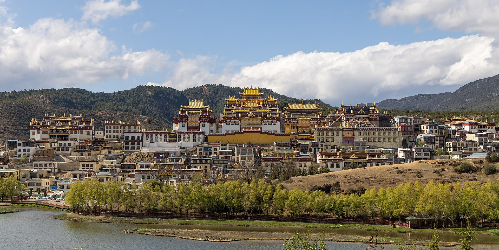

昆明 / Kūnmíng / คุนหมิง
คืนแรกพักก่อนขึ้นรถไฟ คืนสุดท้ายอยู่คุนหมิงก่อนบินกลับวันที่ 14
云南 / Yúnnán / ยูนนาน · FIELD NOTES · 2026
松赞林寺 / Sōngzànlín Sì / วัดซงจ้านหลิน
9–14 ธันวาคม 2026 · วัดเป็นเป้าหมายหลัก
มองชีวิต และถ่ายคนข้าง ๆ ให้สวย

BEFORE WE GO
แลนด์สเคปที่มีคนอยู่ในเรื่อง สถาปัตยกรรมที่มีแสง และสตรีทที่ได้ใช้เวลามอง ระหว่างนั้นก็มีที่นั่งพัก กาแฟ และมุมถ่ายแฟนแบบไม่ต้องรีบ
สมมติบินจาก曼谷 / Màngǔ / กรุงเทพฯ เข้า昆明 / Kūnmíng / คุนหมิง วันที่ 9 พักก่อนขึ้นรถไฟวันที่ 10 และกลับคุนหมิงวันที่ 13 ก่อนบินกลับวันที่ 14 ทุกเวลาเป็น เวลาจีน +1 ชั่วโมงจากไทย เที่ยวบินและรถไฟยังต้องตรวจรอบจริง
พักแชงกรีลา 3 คืน ให้เวลาวัดก่อนกิจกรรมรอง:
LANDSCAPE · ภาพที่ตั้งใจนำกลับมา
จุดที่ควรทุ่มเวลามากที่สุดในแผน 9–14 ธ.ค. คือวิววัดซงจ้านหลินจากฝั่งทะเลสาบลาหมู่ยางชั่ว คำแนะนำนี้เป็นการเลือกเชิงภาพ ไม่ใช่การรับประกันผลงานหรือรางวัล ถ้าหมวดประกวดจำกัดสิ่งปลูกสร้างและต้องการธรรมชาติล้วน ให้น้ำหนักนาปาไห่มากขึ้น
| ลำดับ | สถานที่ · จีน / Pinyin / ไทย | วันที่ | ภาพที่ตามหา |
|---|---|---|---|
| 1 · ภาพหลัก | 松赞林寺 / Sōngzànlín Sì / วัดซงจ้านหลิน จาก 拉姆央措湖 / Lāmǔ Yāngcuò Hú / ทะเลสาบลาหมู่ยางชั่ว | 11 ธ.ค. สำรวจเบา · 12 ธ.ค. ถ่ายจริง | วัดหลายชั้นกับภูเขาและผิวน้ำ ใช้เส้นริมฝั่งหรือรายละเอียดฉากหน้าที่มีจริง รอแสงเฉียง ไม่คาดหวังเงาสะท้อนเสมอ |
| 2 · ธรรมชาติ | 纳帕海 / Nàpà Hǎi / นาปาไห่ | 12 ธ.ค. บ่าย–เย็น · ทางเลือกเมื่อได้ภาพวัดแล้ว | ตามหาเส้นน้ำ พื้นที่ชุ่มน้ำ ทุ่งและภูเขา อาจมีสัตว์ในภูมิทัศน์ เป็นทะเลสาบตามฤดูกาล ไม่รับประกันน้ำเต็ม ทุ่งเขียว หิมะ หรือนก |
| 3 · ภาพรอง | 独克宗古城 / Dúkèzōng Gǔchéng / เมืองเก่าตู๋เค่อจง | 11 ธ.ค. เย็น · ตามกำลัง | ตรอก หลังคาซ้อน และคนในบริบท เหมาะแนวเมือง/ท่องเที่ยว ตัดออกก่อนเวลาวัดและเวลาพัก |
11 ธ.ค. เดินสำรวจมุมสั้น ๆ ตามความพร้อมหลังขึ้นสูง ดูฉากหน้า ทางเข้าที่เปิด และสิ่งรบกวนในเฟรม แล้วพัก วันที่ 12 กันช่วงแสงต้นวัน/ปลายวันให้วัด โดยต้องยืนยันเวลาที่เข้าถึงทะเลสาบได้ก่อน หากยังไม่ได้ภาพวัด กลับไปถ่ายซ้ำสำคัญกว่าเพิ่มนาปาไห่ หากได้ภาพแล้วจึงเลือกนาปาไห่แทนช่วงกลับวัด ไม่ทำทั้งสองแผนเต็มวันพร้อมกัน ใช้รถรับส่งและทางเดินสั้น ไม่ขับวนให้ครบทุกจุด
เล็งภาพสามแบบ: ภาพกว้างที่มีฉากหน้านำสายตา · ภาพเทเลเลือกชั้นหลังคากับภูเขา · ภาพคนหรือสัตว์เล็กในภูมิทัศน์เมื่อเกิดขึ้นจริง 50–140 สำคัญพอ ๆ กับเลนส์กว้าง เพราะช่วยตัดสิ่งรกและเลือกองค์ประกอบ รอแสงและจังหวะมากกว่าสะสมจุดเช็กอิน ยังไม่ยืนยันพยากรณ์วันที่ 11–12 ธ.ค.; สลับช่วงถ่ายตามฟ้าและความพร้อมโดยคงช่วงแรกหลังขึ้นสูงให้เบา
ถ่าย RAW + JPEG เก็บ RAF ต้นฉบับและข้อมูลการถ่ายไว้ ตรวจเงื่อนไขหมวดภาพว่าอนุญาตสิ่งปลูกสร้าง ภาพพาโนรามา คร่อมแสง หรือ Pixel Shift หรือไม่ก่อนส่ง ไม่สมมติว่าทุกเวทีรับภาพรวมหลายเฟรม
จัดชุด Fujifilm สำหรับภาพเหล่านี้ ↓
อันดับ มุมถ่าย และการจัดเวลาเป็นคำแนะนำเชิงบรรณาธิการ ต้องตรวจระดับน้ำ ลม เวลาเปิด และทางเดินก่อนออกจากโรงแรม
SONGZANLIN · เป้าหมายหลัก
เส้นทางหลัก: 昆明 / Kūnmíng / คุนหมิง → 香格里拉 / Xiānggélǐlā / แชงกรีลา → 昆明 / Kūnmíng / คุนหมิง ตัด 大理 / Dàlǐ / ต้าหลี่ ออกจากรอบนี้เพื่อลดการย้ายเมือง พักแชงกรีลา 3 คืน ลำดับความสำคัญคือวัด → วิวทะเลสาบหน้าวัด → เมืองเก่า กิจกรรมรองตัดได้ก่อน
บนมือถือเลื่อนตารางภายในกรอบเพื่ออ่านครบ
| วัน | เป้าหมาย | จังหวะ | คืนที่พัก |
|---|---|---|---|
| 9 ธ.ค. | 昆明 / Kūnmíng / คุนหมิง · เริ่มทริป ไม่เร่งต่อรถไฟ | ถึงเมือง พัก และเตรียมเดินทางวันรุ่งขึ้น | 昆明 / Kūnmíng / คุนหมิง |
| 10 ธ.ค. | 香格里拉 / Xiānggélǐlā / แชงกรีลา · ตรงสู่เป้าหมายหลัก | รถไฟตรง ไม่แวะพักต้าหลี่ | 香格里拉 / Xiānggélǐlā / แชงกรีลา · คืนที่ 1 |
| 11 ธ.ค. | 香格里拉 / Xiānggélǐlā / แชงกรีลา · วันเบา เก็บแรงให้วัด | สำรวจวิววัดก่อน เมืองเก่าเป็นกิจกรรมรอง | 香格里拉 / Xiānggélǐlā / แชงกรีลา · คืนที่ 2 |
| 12 ธ.ค. | 松赞林寺 / Sōngzànlín Sì / วัดซงจ้านหลิน · วันหลักของวัดซงจ้านหลิน | กันวันให้วัด แสง และภาพคู่ | 香格里拉 / Xiānggélǐlā / แชงกรีลา · คืนที่ 3 |
| 13 ธ.ค. | 昆明 / Kūnmíng / คุนหมิง · ลงจากแชงกรีลา เตรียมกลับ | กันทั้งวันสำหรับย้ายเมือง | 昆明 / Kūnmíng / คุนหมิง · คืนที่ 2 |
| 14 ธ.ค. | 昆明 / Kūnmíng / คุนหมิง · กลับบ้านได้ครบเป้าหมาย | จบแผนหลัก 6 วัน หรือเริ่มส่วนต่อขยาย | กลับไทย · หรือ 昆明 / Kūnmíng / คุนหมิง หากเลือกต่อถึง 16 ธ.ค. |
ถ้ากลับวันที่ 14 แผนหลักจบครบแล้ว หากเลือกอยู่ต่อ วันที่ 14 เปลี่ยนจากวันบินเป็นวันพัก แล้วเพิ่มวันที่ 15–16 ตามนี้
| วัน | กิจกรรมรอง | เงื่อนไข | คืนที่พัก |
|---|---|---|---|
| 14 ธ.ค. | 翠湖公园 / Cuìhú Gōngyuán / สวนชุ่ยหู / พักในเมือง | เปลี่ยนวันบินกลับเป็นวันพัก เดินสวนหรือคาเฟ่ใกล้โรงแรมเฉพาะเมื่อมีแรง | 昆明 / Kūnmíng / คุนหมิง |
| 15 ธ.ค. | 昆明老街 / Kūnmíng Lǎojiē / เมืองเก่าคุนหมิง / 钱王街 / Qiánwáng Jiē / ถนนเฉียนหวัง | เลือกตรอก ร้านอาหาร ช้อปเล็กน้อย และคาเฟ่ พักกลางวัน ไม่เพิ่มเมืองหรือทริปไกล | 昆明 / Kūnmíng / คุนหมิง |
| 16 ธ.ค. | สนามบิน → กลับไทย | เช้าเป็นเวลาสำรอง ออกจากโรงแรมตามไฟลต์จริง ไม่ผูกเที่ยวเช้ากับเที่ยวบิน | เดินทางกลับ |
เวลาทั้งหมดเป็นเวลาจีน UTC+8 รถไฟตรง 昆明 / Kūnmíng / คุนหมิง ↔ 香格里拉 / Xiānggélǐlā / แชงกรีลา ใช้กรอบอ้างอิงราว 5–6 ชม.ต่อช่วง เฉพาะเวลานั่งรถไฟ ต้องเพิ่มรถรับส่งและเวลารอ ตารางวันที่ 10 และ 13 ธ.ค. ยังไม่ยืนยัน ต้องตรวจขบวน/สถานีจริงใน 12306 ก่อนจองโรงแรมที่คืนเงินไม่ได้ หากขบวนไม่พอดีให้ปรับวันเดินทาง ไม่บีบเวลาวัดหรือพัก
วัดสูงประมาณ 3,380 เมตร เส้นทางนี้ยังขึ้นสูงค่อนข้างเร็ว ควรปรึกษาแพทย์เวชศาสตร์ท่องเที่ยวก่อนจอง CDC แนะนำขึ้นระดับค่อยเป็นค่อยไปและออกแรงเบาใน 48 ชั่วโมงแรก จึงกันวันที่ 10–11 ให้พัก/เดินสั้น และวางวันเข้าวัดหลักวันที่ 12 โดยดูเวลาไปถึงจริงด้วย ไม่รับประกันว่าพักครบแล้วจะปรับตัวได้ หากมีอาการอย่าขึ้นสูงต่อ; หอบขณะพัก สับสน หรือเดินเซ ต้องรับการช่วยเหลือด่วน
งบเป้าหมายเดิม 50,000 บาท/สองคนยังไม่ใช่ราคาที่ยืนยันสำหรับแผนนี้ แผนหลัก 5 คืน: คุนหมิง 2 + แชงกรีลา 3; ถ้าต่อถึง 16 ธ.ค. เพิ่มคุนหมิง 2 คืน/อาหาร 2 วัน/ค่าเดินทางในเมือง และต้องเทียบราคาเที่ยวบินกลับ 14 กับ 16 ธ.ค.ก่อนซื้อ
ภาพหลักคือวัดทั้งกลุ่มกับทะเลสาบด้านหน้า ใช้ X-H2 + 16–55 เล่าเรื่องและภาพคู่, 50–140 แยกหลังคาทองกับภูเขา กล้อง 360 ใช้คลิปภายนอกสั้น ๆ ไม่มีโดรน ขออนุญาตถ่ายคน/พระ และไม่สมมติว่าถ่ายในวิหารได้
หมุดวัดเป็นพิกัดอ้างอิงบริเวณอาคาร ไม่ใช่ทางเข้าหรือจุดจอดที่ยืนยันแล้ว หมุดต้าหลี่เดิมยังเก็บเป็นคลัง ไม่อยู่ในแผนรอบนี้
THE JOURNEY
หกวันแรกให้แชงกรีลาและวัดซงจ้านหลินก่อน ทะเลสาบ/เมืองเก่าเป็นกิจกรรมรอง รายละเอียดวันเสริม 15–16 อยู่ด้านบน
PLACES & DIRECTIONS
แผนผังสำรองด้านล่างเป็นจุดเที่ยวของแผนเดิม ส่วนหมุดวัดซงจ้านหลินที่เพิ่มใหม่อยู่ใน My Maps และไฟล์ KML ในหัวข้อแผนใหม่
แผนผังอ้างอิงจากพิกัดบริเวณสถานที่ เส้นเชื่อมแสดงลำดับ ไม่ใช่ถนนนำทาง · 龙龛码头 / Lóngkān Mǎtóu / ท่าเรือหลงคานและ双廊古镇 / Shuāngláng Gǔzhèn / เมืองเก่าซวงหลางต้องยืนยันจุดลงรถ
แตะหมุดหมายเลขเพื่อดูชื่อสถานที่ครบสามภาษา
แผนที่ของคุณ
เปิดแผนที่ที่คุณแชร์ไว้ หรือโหลดในหน้านี้เมื่ออินเทอร์เน็ตรองรับ
เพิ่มหมุด松赞林寺 / Sōngzànlín Sì / วัดซงจ้านหลินในเลเยอร์ใหม่ของแผนที่เดิมแล้ว หมุดบริเวณยังต้องยืนยันทางเข้าจริง Google อาจใช้ไม่ได้ในจีน ใช้ชื่อจีนด้านล่างค้นในแอปที่รองรับพื้นที่จริง เช่น 高德地图 (Amap)
LIGHT & STORIES
วัดเป็นจุดหลักของรอบนี้ บัตรจุดเที่ยวต้าหลี่ด้านล่างเป็นคลังแผนเดิม ไม่ได้อยู่ในตาราง 9–14 หรือส่วนต่อถึง 16 ธ.ค. ยังไม่ยืนยันเวลาพระอาทิตย์และเวลาเปิดจริงของวันเดินทาง
ภาพอ้างอิงจาก Wikimedia Commons พร้อมเครดิตและเงื่อนไขใช้ภาพ ภาพต่างปี/ฤดู ไม่รับประกันสภาพจริงในเดือนธันวาคม
แนวสารคดีเริ่มจาก สถานที่ → คน → รายละเอียด ไม่ใช่แค่แลนด์มาร์กสวย ๆ ขออนุญาตก่อนถ่ายคนใกล้ ๆ และให้เวลาพวกเขาทำงานตามปกติ
REST & BUDGET
คืนแรกพักก่อนขึ้นรถไฟ คืนสุดท้ายอยู่คุนหมิงก่อนบินกลับวันที่ 14
ที่เดียวสามคืน ใกล้อาหาร รถเข้าถึง ฮีตเตอร์ น้ำอุ่น และห้องชั้นต่ำ/ลิฟต์ สำคัญกว่าวิวห้อง
ถ้าเลือกกลับวันที่ 16 พักโรงแรมเดิมเพิ่มสองคืน ไม่เพิ่มเมือง
เลือกฮีตเตอร์ น้ำอุ่น ความเงียบ ห้องปลอดบุหรี่ และลิฟต์หรือห้องชั้นต่ำ ก่อนจ่ายเพิ่มเพื่อวิวห้อง · ยังไม่ได้เลือกหรือยืนยันโรงแรมจริง
กรอบวางแผน ไม่ใช่ราคาจองสด รวมเครื่องบินเป้าหมาย ฿16,000 พร้อมสัมภาระ หากแพงกว่านี้จะใช้เงินสำรอง · ไม่รวมช้อปปิ้ง
FUJIFILM · ชุดที่กำลังพิจารณา
10–24 เป็นเลนส์กว้างที่ให้ทดสอบเพิ่มก่อนตัดสินใจ พัก 18 / 50 F1.0 / 90 ไว้เป็นตัวเลือกตามงาน ไม่ถือว่ายืนยันพกทุกชิ้นหรือสั่งซื้อใหม่แล้ว
X-H2 เป็นบอดี้หลักสำหรับแลนด์สเคป 40.2MP ส่วน X-H2S 26.16MP เป็นบอดี้คู่สำหรับคนเคลื่อนไหว สัตว์ และวิดีโอ ทั้งคู่ใช้ APS-C ขนาดประมาณ 23.5 × 15.6 มม. จึงได้มุมรับภาพเดียวกันเมื่อใช้เลนส์เดียวกัน X-H2S ไม่ได้ครอปขอบเลนส์ทิ้งเพราะมีพิกเซลน้อยกว่า ความต้องการรายละเอียดต่อภาพของไฟล์ 26MP ต่างจาก 40MP จึงต้องเทียบทั้งที่ 100% และที่ขนาดส่งเดียวกัน โดยแยกจากเป้าหมาย high resolution ของ X-H2
วิว เล่าเรื่อง และสถาปัตยกรรม ย้าย 50–140 ขึ้นบอดี้นี้เมื่อถ่ายเทเลแลนด์สเคปที่ต้องการรายละเอียดสูง
ภาพคน สัตว์ในภูมิทัศน์ และวิดีโอ; เวลาเดินเย็นเปลี่ยนเป็น 33 F1.4 และพักชุดซูมไว้โรงแรม
| ชิ้น | ข้อเสนอ | ข้อเท็จจริง / เงื่อนไข | จะได้ใช้เมื่อไร |
|---|---|---|---|
| XF16–55mm F2.8 รุ่นแรก | พก · เลนส์หลัก | 655 กรัม ไม่รวมฝา/ฮูด | วิวเล่าเรื่อง ภาพคนกับสถานที่ สถาปัตยกรรม และเดินเมือง ติด X-H2 เป็นค่าเริ่มต้น |
| XF50–140mm F2.8 + XF1.4X TC WR | พก · เทเลหลัก; TC ใช้เมื่อจำเป็น | ใส่ TC ได้ช่วง 70–196mm F4 | ตัดชั้นวัดกับภูเขา ภาพคู่ระยะไกล และสัตว์ในภูมิทัศน์ เริ่มไม่ใส่ TC ก่อน ถ้าภาพนิ่งต้องการรายละเอียดสูงให้ย้ายเลนส์ขึ้น X-H2 |
| XF33mm F1.4 R LM WR | พก · ไพรม์ตัวแรกที่เลือก | 360 กรัม · มุมมองใกล้ 50mm เทียบฟูลเฟรม | ถ่ายแฟนในร้าน/คาเฟ่ อาหาร สตรีทและแสงค่ำ F1.4 สว่างกว่า F2.8 สองสต็อป ใช้กับชุดเดินเย็น X-H2S + 33 แทนถือสองซูม ไม่ใช่เลนส์วิวกว้าง |
| XF18mm F1.4 R LM WR | ตัวเลือก · ไม่จำเป็นในชุดพื้นฐาน | 370 กรัม · มุมมองราว 27mm | คุ้มเมื่อเน้นคนกับฉากในที่แคบหรือแสงน้อย ถ้าใช้สองซูมกับ 33 เป็นหลัก แนะนำพักตัวนี้ไว้ก่อน; 18 แคบกว่า 16 และไม่แทนช่วง 10–13mm |
| XF50mm F1.0 R WR | แนะนำไม่พกในรอบนี้ | 845 กรัม | ลุคละลายหลังเป็นเหตุผลเชิงรสนิยมที่มีคุณค่า แต่ไม่เรียกว่าซอฟต์เสมอไป น้ำหนักสูงและมีสองซูม/33 รองรับงานหลักอยู่แล้ว เลือกแทนไพรม์อื่นเฉพาะถ้าลุคนี้เป็นเป้าหมายจริง |
| XF90mm F2 R LM WR | ตัวเลือกสำหรับช่วงพอร์ตเทรตโดยเฉพาะ | 540 กรัม · เบากว่า 50 F1.0 305 กรัม | เลือกก่อน 50 F1.0 ถ้าต้องการภาพคนกลางแจ้งกับฉากหลังไกลและมีระยะถอย แต่ 50–140 ครอบคลุมระยะนี้แล้ว จึงไม่ใช่ของจำเป็น ไม่เพิ่มทั้ง 50 F1.0 และ 90 เข้าเป้ |
| XF10–24mm F4 R OIS · รุ่นแรก | ทดสอบก่อนตัดสินใจ · กว้างตัวแรกที่มีอยู่ | 410 กรัม · รุ่นแรก | ถ่ายทดสอบกับ X-H2 ที่ 10/14/18mm ช่วง F5.6–8 ตรวจกลาง/ขอบ จุดโฟกัส และขอบแต่ละด้านที่ขนาดส่งจริงด้วย โจทย์คือรายละเอียดบน 40MP ไม่ถึงที่ผู้เดินทางต้องการ X-H2S ใช้เป็นทางเลือก 26MP ได้ แต่ไม่ทดแทนไฟล์ 40MP ของ X-H2 |
| Viltrox AF13mm F1.4 XF | ยังไม่แนะนำซื้อก่อนทดสอบของเดิม | มุมมองราว 20mm · ไม่กว้างเท่า 10mm | เลือกเมื่อมีโจทย์มุมกว้างแสงน้อยชัดเจน หรือ 10–24 ตัวที่มีไม่ผ่านการทดสอบ ยืนยัน X-mount และทดสอบขอบภาพ/โฟกัสกับบอดี้จริง ไม่รับรองว่าคมกว่าซูมทุกตำแหน่ง |
| Tamron 150–500mm | ไม่พก · ตามที่เลือกไว้ | ลดภาระชุดซูเปอร์เทเล | ทริปนี้ให้วัด/แลนด์สเคปมาก่อนนกระยะไกล ใช้ 50–140 + TC ตามโอกาส ไม่คาดหวังภาพนกเต็มเฟรมเท่าซูเปอร์เทเล |
โจทย์ของผู้เดินทางคือรายละเอียดของ 10–24 บน X-H2 40MP ยังไม่ถึงที่ต้องการ ไม่ใช่ใช้กับกล้องไม่ได้ X-H2S 26.16MP อาจให้ผลที่พอใจมากกว่าเมื่อดูรายพิกเซล แต่ไม่ได้แก้ข้อจำกัดออปติก และไม่ให้ไฟล์ 40MP/Pixel Shift แบบ X-H2 เริ่มทดสอบเปรียบเทียบจากฉากระยะไกลที่นิ่ง ถ่ายบนขาตั้งให้ขอบมีรายละเอียดจริง ตรวจทั้งที่ 100% และขนาดพิมพ์/ส่งเดียวกัน หากพอใจให้พกของเดิม 18 F1.4 ไม่แทน ultrawide ส่วน 13mm F1.4 กว้างกว่า 18 แต่ไม่แทนความกว้างสุด 10mm และไม่ใช่คำตอบอัตโนมัติเรื่องความคม
โจทย์รายละเอียดสูงของทริปนี้ใช้ภาพเดี่ยว X-H2 40.2MP เป็นหลัก Pixel Shift 160MP เป็นโหมดเสริม: ถ่าย 20 เฟรมแล้วรวมด้วย Fujifilm Pixel Shift Combiner ไม่ใช่ไฟล์ 160MP สำเร็จในกล้อง และไม่ใช่โหมดถือถ่ายแบบเดียวกับ OM-1 ใช้ขาตั้งและฉากนิ่ง; ผิวน้ำ กิ่งไม้ ธง คน นก และแสงที่เปลี่ยนมีโอกาสเกิดรอยต่อ/สิ่งผิดปกติ จึงไม่ใช้ Pixel Shift เป็นแผนหลักของภาพสะท้อนวัด เก็บภาพเดี่ยวสำรองทุกครั้ง ส่วน X-H2S ไม่มี Pixel Shift แบบนี้
เริ่มจาก RAW + JPEG: PROVIA/Standard เป็นฐานสีอ่านง่าย, Velvia/Vivid เป็นทางเลือกแลนด์สเคปเมื่อสีไม่จัดจนเสียรายละเอียด และ ASTIA/Soft เป็นตัวเลือกภาพแฟน ใช้เป็นจุดเริ่มต้นเชิงรสนิยม ไม่ใช่สูตรชนะประกวดหรือการรับรองสีตรง RAW ไม่ถูกอบ Film Simulation แบบ JPEG จึงเก็บ RAF เพื่อปรับภายหลังได้ ทดสอบ WB และโทนเดียวกันบนสองบอดี้ ไม่สมมติว่า JPEG จะเหมือนกันทุกสภาพ ตรวจเฟิร์มแวร์และเมนูจริงก่อนกำหนดสูตรใหม่
ผมเลือก Benro CyanBird เป็นตัวแรกสำหรับทริปนี้เมื่อทดสอบกับชุดจริงแล้วผ่าน เน้นพกไปถึงจุดถ่ายได้สะดวก แต่ยังไม่สรุปว่าแข็งแรงกว่า Manfrotto จากชนิดคาร์บอนหรือพิกัดรับน้ำหนัก รหัส CB259CFK ที่แจ้งยังไม่ได้จับคู่ยืนยันกับรหัสผู้ผลิต TCBC15FS20PROC จึงไม่แทนน้ำหนักของรุ่นอื่นให้โดยอัตโนมัติ รุ่น TCBC15FS20PROC + FS20PRO ที่ผู้ผลิตระบุหนัก 1.02 กก.; ใช้ตัวเลขนี้ได้เฉพาะเมื่อตรวจว่าตรงตัวจริง
ทดสอบ Benro และ Manfrotto Befree Advanced MKBFRTA4-BH ด้วย X-H2 + 50–140 ที่ 140mm และ TC โดยยึดที่คอลลาร์เลนส์ ตั้งเสากลางต่ำ ถ่ายภาพเดี่ยวหลายสปีดด้วยตั้งเวลา/รีโมต ตรวจภาพที่ 100% และอาการหัวไหลหลังล็อก ถ้า Benro ไม่ผ่านแต่ Manfrotto ผ่าน ให้พก Manfrotto ความนิ่งของชุดจริงสำคัญกว่าตัวเลขรับน้ำหนัก สำหรับ Pixel Shift ต้องผ่านการทดสอบรวมไฟล์จริงด้วย เก็บสายคล้องไม่ให้ปลิวและไม่แขวนกระเป๋าให้แกว่งรับลม
Think Tank Rotation 34L ใช้ต่อได้ ผู้ผลิตระบุน้ำหนักเปล่า 2.2 กก. และช่องหมุน 8.5L ช่องหลักด้านบนไม่ได้มีชุดกั้นกล้องครบทุกส่วนโดยอัตโนมัติ จัดชิ้นที่สองใน insert/ซองกันกระแทกที่มีจริง ทดสอบหมุนช่องเมื่อใส่เสื้อกันหนาว เก็บชุดที่หยิบบ่อยด้านล่าง น้ำ/เสื้อ/แบตสำรองด้านบน และยึดขาตั้งให้แน่น อย่าถือว่าช่องหมุนใส่สองบอดี้ติดซูมพร้อมกันได้โดยไม่ลอง ชั่งเป้พร้อมน้ำและของใช้จริง และเช็กข้อจำกัดสายการบินของเที่ยวบินที่จอง
ชุดพื้นฐานให้ 33 สำหรับร้าน/ภาพคนกับบริบท และ 50–140 สำหรับกลางแจ้ง ถ้าจะกันช่วงถ่ายพอร์ตเทรตเฉพาะจริง ผมเลือก 90 F2 ก่อน 50 F1.0 เพื่อลดน้ำหนัก แต่ต้องมีระยะถอย หากชอบลุค F1.0 ที่ระยะทำงานใกล้กว่าเป็นพิเศษ ให้เลือก 50 แทน 90 และลดเลนส์อื่น ไม่พกทั้งคู่เพียงเผื่อไว้
ใช้คลิปภายนอกสั้น ๆ ภาพคู่ และบรรยากาศ ไม่กินเวลาพัก ยืนยันแบตและการสำรองตามรุ่นจริง ไม่พกโดรน
ตรวจแบต NP-W235 ของสองบอดี้และจำนวนที่มีจริง เก็บสำรองให้อุ่น ทดลองใช้งานเต็มวันก่อนเดินทาง ตรวจการ์ดตามคู่มือสำหรับโหมดภาพ/วิดีโอที่จะใช้ และสำรอง RAF/JPEG ทุกคืน ไม่ใช้จำนวนแบตของชุด OM-1 เดิมเป็นข้อยืนยัน
X-H2 ภาพเดี่ยว RAW + JPEG, เริ่ม ISO 125 เมื่อแสง/สปีดเอื้อ ทดลอง F5.6–8 กับฉากจริง ไม่หรี่สุดเพียงเพื่อความคม เมื่อคน สัตว์ หรือลมเคลื่อนไหว ให้สปีดชัตเตอร์สำคัญกว่ารักษา ISO ต่ำสุด
บทบาทเลนส์ ลุคสี และชุดที่แนะนำเป็นดุลยพินิจเชิงภาพ ยังไม่ได้ทดสอบไฟล์เลนส์หรือความนิ่งขาตั้งของผู้เดินทาง รุ่น 16–55 และ 10–24 เป็นรุ่นแรก ข้อจำกัดรายละเอียดของ 10–24 บน 40MP เป็นประสบการณ์/ความต้องการของผู้เดินทาง ไม่ใช่ข้อสรุปแทนเลนส์ทุกตัว
READY TO LEAVE
รายการติ๊กและจุดโปรดบันทึกในเครื่องนี้ ไม่ส่งข้อมูลออกไป
Petal Search เป็นเครื่องมือค้นหา ไม่ได้ยืนยันการนำทาง Petal Maps บนมือถือในจีนแผ่นดินใหญ่ หน้า Support ที่ตรวจยังไม่ยืนยันพื้นที่นี้ และข้อมูลบางหน้าเป็น EMUI รุ่นเก่า ควรตรวจรุ่นแอปจริงและมี Amap สำรอง
อ่านต่อได้เมื่อเน็ตไม่พร้อม
เมื่อเปิดเว็บผ่าน HTTPS ระบบจะพยายามเก็บตัวไกด์และแผนผังไว้ในเครื่อง แผนที่ Google และลิงก์ภายนอกยังต้องใช้อินเทอร์เน็ต
ดาวน์โหลดไกด์ฉบับข้อความ ↗ปรับปรุงเนื้อหา 30 ตุลาคม 2026 · แหล่งข้อมูลท่องเที่ยวตรวจค้น 29 ตุลาคม 2026 · ช่วงแสง สภาพอากาศเฉลี่ย และเวลาเดินทางไม่รับประกันสภาพจริง ต้องยืนยันเที่ยวบิน รถไฟ โรงแรม เวลาเปิดสถานที่ รถพร้อมคนขับ และเวิร์กช็อปก่อนจอง
พิกัดบริเวณจาก Mapcarta/OSM และแหล่งอ้างอิงในไฟล์ไกด์ ไม่ใช่จุดจอดรถหรือจุดตั้งขาตั้งที่ตรวจหน้างาน ภาพหน้าปกเป็นภาพถ่ายอ้างอิงของ松赞林寺 / Sōngzànlín Sì / วัดซงจ้านหลิน ไม่ใช่การรับประกันแสง ฤดูกาล หรือเงาสะท้อน